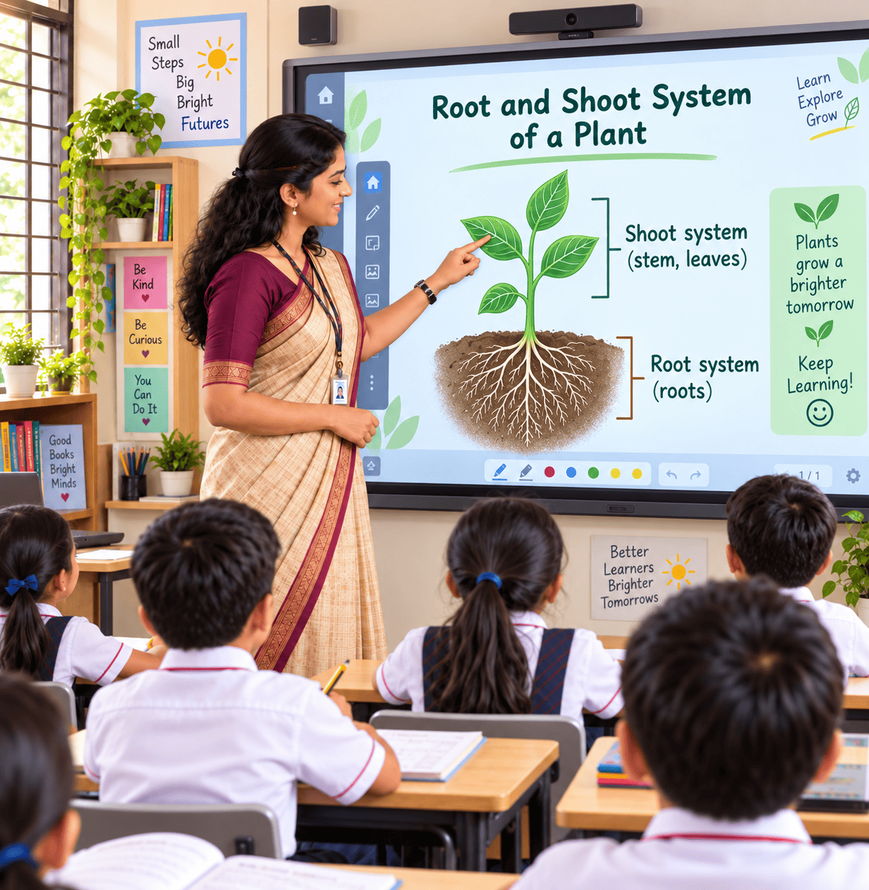
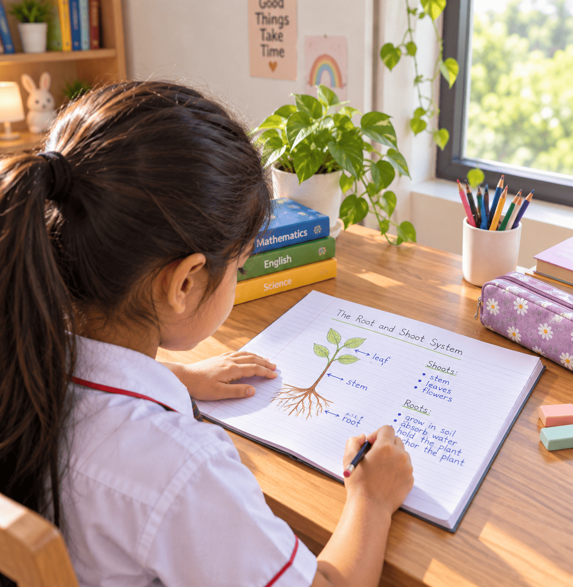
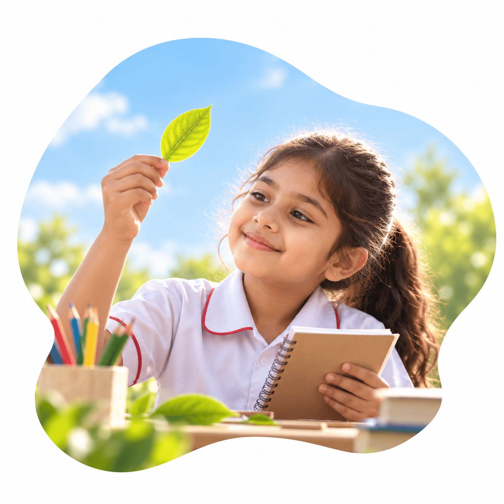

Five steps
One powerful
method.
At XSEED, we turn each class into a repeatable cycle of experience, thinking,
application and reflection so every child builds deeper understanding, one period
at a time.
Where the XSEED Method comes from.
The XSEED Method grew out of years of classroom research and iteration led by Ashish Rajpal, an alumnus of the Harvard Graduate School of Education, with a single mission: to make every child a genuine learner, not just an exam performer.
Now implemented in 3,500+ schools across India and globally, it remains one of the most rigorously tested mastery-based pedagogies in Indian education.
“Every child a genuine learner.”
A simple rhythm for deeper learning.
-
1

STEP 01 — AIMA Clear Start
The teacher sets a clear goal: today we will learn about the root and shoot system of a plant.
-
2STEP 02 — ACTION
Hands-On Learning
Children observe a real plant and identify its root and shoot parts through a hands-on activity.
-
3STEP 03 — ANALYSIS
Deeper Thinking
The class discusses what they noticed and how the root and shoot help the plant grow.
-
4

STEP 04 — APPLICATIONHome Connection
For homework, children draw and label the root and shoot system of a plant using an example they find at home.
-
5STEP 05 — ASSESSMENT
Confident Learners
Each child explains their learning in their own words and shows understanding independently.
Learning matters when children can use it themselves.
Children apply their understanding to new questions, situations and challenges. This is where knowledge begins to become capability.
Understanding begins with doing.
Children learn through activities, examples, conversations, experiments and real situations.
They experience the idea before being asked to remember it.

See what the XSEED Method looks like in action.
Experience how XSEED brings curiosity, discipline, and measurable academic success to everyday teaching.
“worth seeing for yourself”